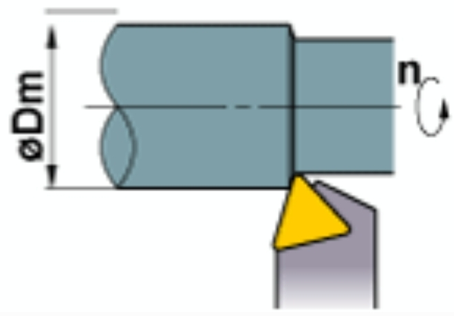

Turning Cutting Time Calculator
Rev: 001

\[ Tc = \frac{lm}{l} \, (min) \]
Tc : Cutting Time (min)
lm : Workpiece Length (mm)
l : Cutting Length per min (mm/min)
Calculate lm
mm
Calculate l
mm/min
Calculate Tc
min
Calculate
* This calculator is for reference only. Actual results may vary based on cutting conditions.